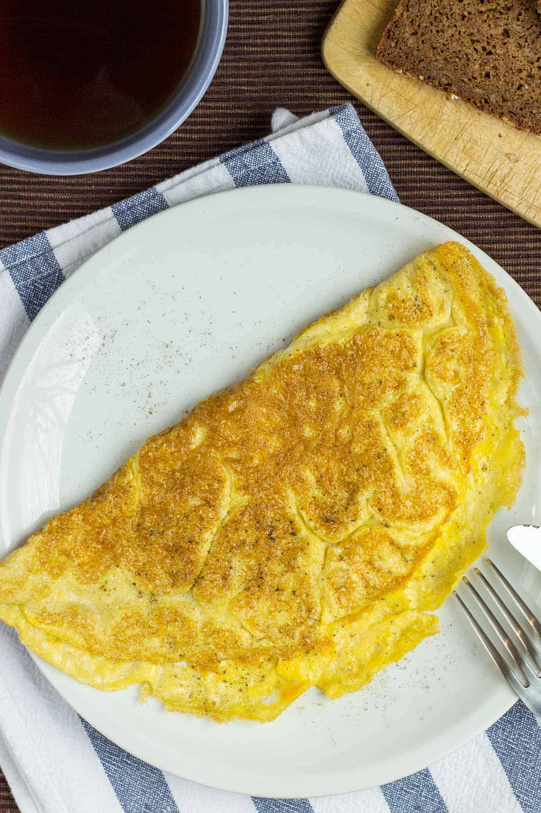

Hungry mans Omlete

Stuff to make with
- 2 eggs
- a pinch of salt
- 1 Bell pepper
- Half am onion
- 2 Tbsp Chili powder
- 1 tsp Tumeric
Steps
- Break eggs in a clean bowl
- pour a pich of salt on the eggs salt bae style
- Whisk untill its a fine yellow paste and has lots of bubbles on it
- Cut the onion Dice style make it small and set it aside in an another bowl
- Cut the bellpeper again do it dice style and make it small and set it aside in an another bowl
- Heat up the frying pan and pour a light amount of oil on it now spin it and coat its entirety in oil
- drop the vegggies on the pan and saute them do it untill they are slightly cooked dont cook them fully
- Now pour the veggies in the egg bowl
- add the chili powder and the tumeric and whisk untill properly mixed and bubbles start to show
- Pour the mixture into a frying man make sure its coated in suraface level oil
- As it sizzles move the pan around to let the mixture escape and get cooked evenly
- Now Pick the omelete up from one side and using whatever appratus you have fold it in half
- Now press down on it so it gets really cooked and cook untill the onions are golden brown
- Now place it on your plate of choice top it with whatever spices or side dish you have and ENJOY
If youre reading this that means that this wasnt all for nothing thank you for reading